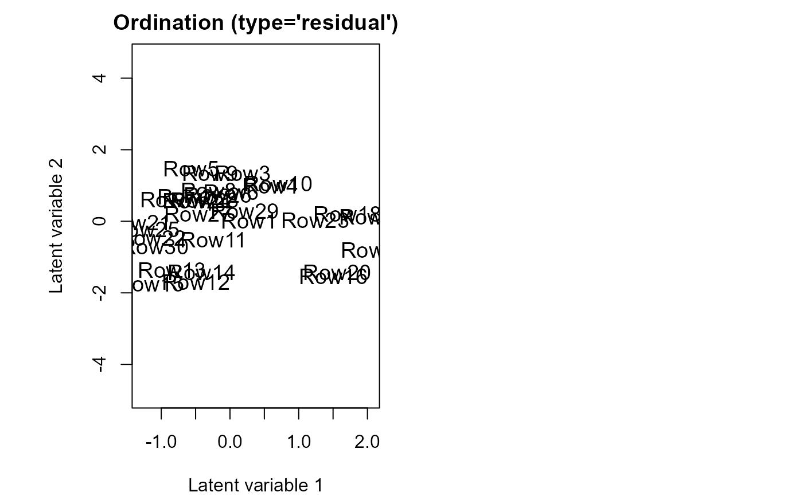
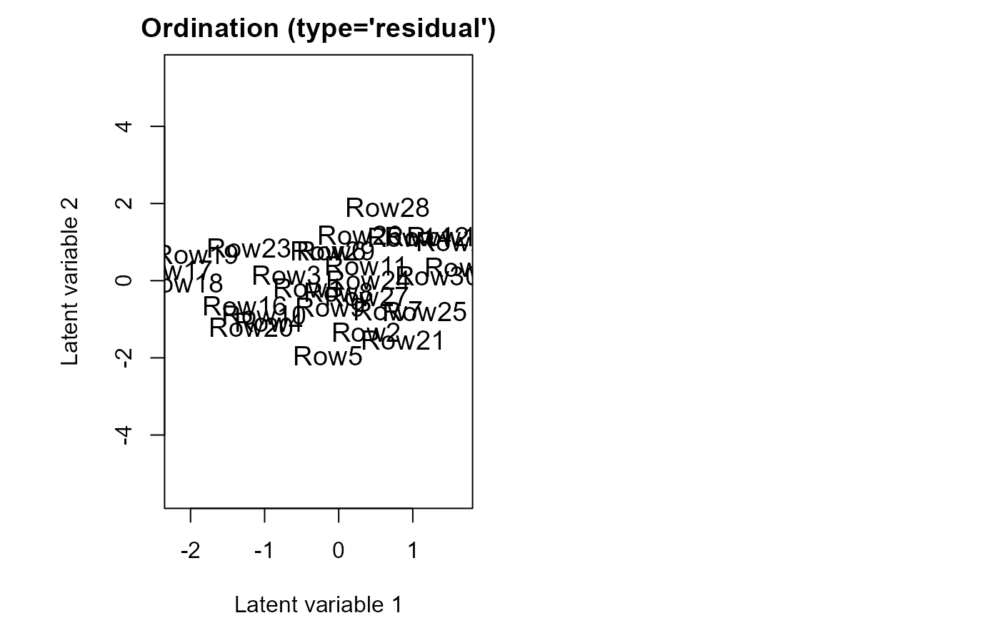
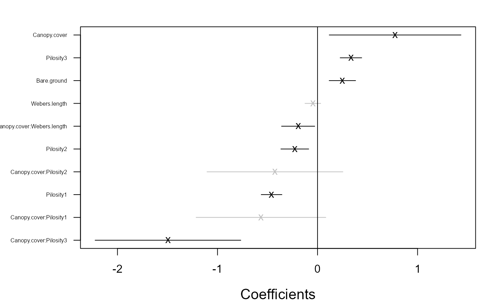

Fits generalized linear latent variable model for multivariate data. The model can be fitted using Laplace approximation method or variational approximation method.
gllvm(y = NULL, X = NULL, TR = NULL, data = NULL, formula = NULL, num.lv = 2, family, method = "VA", row.eff = FALSE, offset = NULL, sd.errors = TRUE, Lambda.struc = "unstructured", Ab.struct = "unstructured", diag.iter = 5, Ab.diag.iter = 0, trace = FALSE, plot = FALSE, la.link.bin = "probit", n.init = 1, Power = 1.5, reltol = 1e-08, seed = NULL, max.iter = 200, maxit = 1000, start.fit = NULL, start.lvs = NULL, starting.val = "res", TMB = TRUE, optimizer = "optim", scale.X = TRUE, Lambda.start = c(0.1, 0.1, 0.1), jitter.var = 0, randomX = NULL, randomX.start = "res", dependent.row = FALSE, beta0com = FALSE, zeta.struc = "species")
Arguments
| y | (n x m) matrix of responses. |
|---|---|
| X | matrix or data.frame of environmental covariates. |
| TR | matrix or data.frame of trait covariates. |
| data | data in long format, that is, matrix of responses, environmental and trait covariates and row index named as ’id’. When used, model needs to be defined using formula. This is alternative data input for y, X and TR. |
| formula | an object of class "formula" (or one that can be coerced to that class): a symbolic description of the model to be fitted. |
| num.lv | number of latent variables, d, in gllvm model. Non-negative integer, less than number of response variables (m). Defaults to 2. |
| family | distribution function for responses. Options are |
| method | model can be fitted using Laplace approximation method ( |
| row.eff |
|
| offset | vector or matrix of offset terms. |
| sd.errors | logical. If |
| Lambda.struc | covariance structure of VA distributions for latent variables when |
| Ab.struct | covariance structure of VA distributions for random slopes when |
| diag.iter | non-negative integer which is used to speed up the updating of variational (covariance) parameters in VA method. Defaults to 5 if |
| Ab.diag.iter | As above, but for variational covariance of random slopes. |
| trace | logical, if |
| plot | logical, if |
| la.link.bin | link function for binomial family if |
| n.init | number of initial runs. Uses multiple runs and picks up the one giving highest log-likelihood value. Defaults to 1. |
| Power | fixed power parameter in Tweedie model. Scalar from interval (1,2). Defaults to 1.5. |
| reltol | convergence criteria for log-likelihood, defaults to 1e-6. |
| seed | a single seed value, defaults to |
| max.iter | maximum number of iterations when |
| maxit | maximum number of iterations within |
| start.fit | object of class 'gllvm' which can be given as starting parameters for count data (poisson, NB, or ZIP). |
| start.lvs | initialize starting values for latent variables with (n x num.lv) matrix. Defaults to |
| starting.val | starting values can be generated by fitting model without latent variables, and applying factorial analysis to residuals to get starting values for latent variables and their coefficients ( |
| TMB | logical, if |
| optimizer | if |
| scale.X | if |
| Lambda.start | starting values for variances in VA distributions for latent variables, random row effects and random slopes in variational approximation method. Defaults to 0.1. |
| jitter.var | jitter variance for starting values of latent variables. Defaults to 0, meaning no jittering. |
| randomX | formula for species specific random effects of environmental variables in fourth corner model. Defaults to |
| randomX.start | Starting value method for the random slopes. Options are |
| dependent.row | logical, whether or not random row effects are correlated (dependent) with the latent variables. Defaults to |
| beta0com | logical, if |
| zeta.struc | Structure for cut-offs in the ordinal model. Either "common", for the same cut-offs for all species, or "species" for species-specific cut-offs. For the latter, classes are arbitrary per species, each category per species needs to have at least one observations. Defaults to "species". |
Value
An object of class "gllvm" includes the following components:
function call
log likelihood
latent variables
list of parameters
theta coefficients related to latent variables
beta0 column specific intercepts
Xcoef coefficients related to environmental covariates X
B coefficients in fourth corner model
row.params row-specific intercepts
phi dispersion parameters \(\phi\) for negative binomial or Tweedie family, probability of zero inflation for ZIP family, standard deviation for gaussian family or shape parameter for gamma family
inv.phi dispersion parameters \(1/\phi\) for negative binomial
power parameter \(\nu\) for Tweedie family
list of standard errors of parameters
list of prediction covariances for latent variables and variances for random row effects when method "LA" is used
covariance matrices for variational densities of latent variables and variances for random row effects
Details
Fits generalized linear latent variable models as in Hui et al. (2015 and 2017) and Niku et al. (2017). Method can be used with two types of latent variable models depending on covariates. If only site related environmental covariates are used, the expectation of response \(Y_{ij}\) is determined by
$$g(\mu_{ij}) = \eta_{ij} = \alpha_i + \beta_{0j} + x_i'\beta_j + u_i'\theta_j,$$
where \(g(.)\) is a known link function, \(u_i\) are \(d\)-variate latent variables (\(d\)<<\(m\)), \(\alpha_i\) is an optional row effect at site \(i\), and it can be fixed or random effect, \(\beta_{0j}\) is an intercept term for species \(j\), \(\beta_j\) and \(\theta_j\) are column specific coefficients related to covariates and the latent variables, respectively.
An alternative model is the fourth corner model (Brown et al., 2014, Warton et al., 2015) which will be fitted if also trait covariates are included. The expectation of response \(Y_{ij}\) is
$$g(\mu_{ij}) = \alpha_i + \beta_{0j} + x_i'(\beta_x + b_j) + TR_j'\beta_t + vec(B)*kronecker(TR_j,X_i) + u_i'\theta_j$$
where g(.), \(u_i\), \(\beta_{0j}\) and \(\theta_j\) are defined as above. Vectors \(\beta_x\) and \(\beta_t\) are the main effects or coefficients related to environmental and trait covariates, respectively, matrix \(B\) includes interaction terms. Vectors \(b_j\) are optional species-specific random slopes for environmental covariates. The interaction/fourth corner terms are optional as well as are the main effects of trait covariates.
The method is sensitive for the choices of initial values of the latent variables. Therefore it is
recommendable to use multiple runs and pick up the one giving the highest log-likelihood value.
However, sometimes this is computationally too demanding, and default option
starting.val = "res" is recommended. For more details on different starting value methods, see Niku et al., (2018).
Models are implemented using TMB (Kristensen et al., 2015) applied to variational approximation (Hui et al., 2017) and Laplace approximation (Niku et al., 2017).
With ordinal family response classes must start from 0 or 1.
Distributions
Mean and variance for distributions are defined as follows.For count data
family = poisson(): Expectation \(E[Y_{ij}] = \mu_{ij}\), variance \(V(\mu_{ij}) = \mu_{ij}\), orfamily = "negative.binomial": Expectation \(E[Y_{ij}] = \mu_{ij}\), variance \(V(\mu_{ij}) = \mu_{ij}+\mu_{ij}^2\phi_j\), orfamily = "ZIP": Expectation \(E[Y_{ij}] = (1-p)\mu_{ij}\), variance \(V(\mu_{ij}) = \mu_{ij}(1-p)(1+\mu_{ij}p)\).For binary data
family = binomial(): Expectation \(E[Y_{ij}] = \mu_{ij}\), variance \(V(\mu_{ij}) = \mu_{ij}(1-\mu_{ij})\).For positive continuous data
family = "gamma":Expectation \(E[Y_{ij}] = \mu_{ij}\), variance \(V(\mu_{ij}) = \mu_{ij}^2/\phi_j\), where \(\phi_j\) is species specific shape parameter.For non-negative continuous data
family = "exponential":Expectation \(E[Y_{ij}] = \mu_{ij}\), variance \(V(\mu_{ij}) = \mu_{ij}^2\).For non-negative continuous or biomass data
family = "tweedie"Expectation \(E[Y_{ij}] = \mu_{ij}\), variance \(V(\mu_{ij}) = \phi_j*\mu_{ij}^\nu\), where \(\nu\) is a power parameter of Tweedie distribution. See details Dunn and Smyth (2005).For ordinal data
family = "ordinal": Cumulative probit model, see Hui et.al. (2016).For normal distributed data
family = gaussian(): Expectation \(E[Y_{ij}] = \mu_{ij}\), variance \(V(y_{ij}) = \phi_j^2.\)
Note
If function gives warning: 'In f(x, order = 0) : value out of range in 'lgamma'', optimizer have visited an area where gradients become too big. It is automatically fixed by trying another step in the optimization process, and can be ignored if errors do not occur.
References
Brown, A. M., Warton, D. I., Andrew, N. R., Binns, M., Cassis, G., and Gibb, H. (2014). The fourth-corner solution - using predictive models to understand how species traits interact with the environment. Methods in Ecology and Evolution, 5:344-352.
Dunn, P. K. and Smyth, G. K. (2005). Series evaluation of tweedie exponential dispersion model densities. Statistics and Computing, 15:267-280.
Hui, F. K. C., Taskinen, S., Pledger, S., Foster, S. D., and Warton, D. I. (2015). Model-based approaches to unconstrained ordination. Methods in Ecology and Evolution, 6:399-411.
Hui, F. K. C., Warton, D., Ormerod, J., Haapaniemi, V., and Taskinen, S. (2017). Variational approximations for generalized linear latent variable models. Journal of Computational and Graphical Statistics. Journal of Computational and Graphical Statistics, 26:35-43.
Kasper Kristensen, Anders Nielsen, Casper W. Berg, Hans Skaug, Bradley M. Bell (2016). TMB: Automatic Differentiation and Laplace Approximation. Journal of Statistical Software, 70(5), 1-21.
Niku, J., Warton, D. I., Hui, F. K. C., and Taskinen, S. (2017). Generalized linear latent variable models for multivariate count and biomass data in ecology. Journal of Agricultural, Biological, and Environmental Statistics, 22:498-522.
Niku, J., Brooks, W., Herliansyah, R., Hui, F. K. C., Taskinen, S., and Warton, D. I. (2018). Efficient estimation of generalized linear latent variable models. PLoS One, 14(5):1-20.
Warton, D. I., Guillaume Blanchet, F., O'Hara, R. B., Ovaskainen, O., Taskinen, S., Walker, S. C. and Hui, F. K. C. (2015). So many variables: Joint modeling in community ecology. Trends in Ecology & Evolution, 30:766-779.
See also
Examples
## Load a dataset from the mvabund package data(antTraits) y <- as.matrix(antTraits$abund) X <- as.matrix(antTraits$env) TR <- antTraits$traits # Fit model with environmental covariates Bare.ground and Shrub.cover fit <- gllvm(y, X, formula = ~ Bare.ground + Shrub.cover, family = poisson()) ordiplot(fit)coefplot(fit)## Example 1: Fit model with two latent variables # Using variational approximation: fitv0 <- gllvm(y, family = "negative.binomial", method = "VA") ordiplot(fitv0)summary(fitv0)#> $`log-likelihood` #> [1] -1895.09 #> #> $df #> [1] 163 #> #> $AIC #> [1] 4116.179 #> #> $AICc #> [1] 3717.194 #> #> $BIC #> [1] 4344.574 #> #> $Call #> gllvm(y = y, family = "negative.binomial", method = "VA") #> #> $family #> [1] "negative.binomial" #> #> $Coefficients #> Intercept theta.LV1 theta.LV2 #> Amblyopone.australis -0.94551512 0.87789264 0.00000000 #> Aphaenogaster.longiceps -3.29235325 0.05816005 2.78497682 #> Camponotus.cinereus.amperei -2.26625127 0.82688634 0.52025089 #> Camponotus.claripes 0.51043791 0.37282729 0.42824985 #> Camponotus.consobrinus 1.21595069 0.75389839 -0.84082348 #> Camponotus.nigriceps -0.59999252 -0.52076741 0.78234531 #> Camponotus.nigroaeneus -0.54195756 0.49198826 0.38952791 #> Cardiocondyla.nuda.atalanta -2.65766440 -2.20247717 -0.94464319 #> Crematogaster.sp..A -2.30785462 1.81275378 1.54454770 #> Heteroponera.sp..A 1.23848686 0.18577661 -0.55968288 #> Iridomyrmex.bicknelli 1.28832808 0.18542115 -1.02027083 #> Iridomyrmex.dromus -0.79710439 0.88635568 -0.08375589 #> Iridomyrmex.mjobergi 1.33384205 -0.45345139 0.05323668 #> Iridomyrmex.purpureus -0.08467130 1.25072227 0.93733261 #> Iridomyrmex.rufoniger 2.36193548 -0.15080029 -0.79389928 #> Iridomyrmex.suchieri 0.45593687 0.37923111 -0.74365558 #> Iridomyrmex.suchieroides -0.44288675 -0.45129239 -0.82315440 #> Melophorus.sp..E -1.19059829 0.12491319 -0.42520122 #> Melophorus.sp..F 0.53152513 -0.54714605 -0.36530715 #> Melophorus.sp..H -0.55644902 -0.81315979 -0.45491850 #> Meranoplus.sp..A -0.40808209 -0.90955694 -1.02003708 #> Monomorium.leae 1.34345899 0.62134149 0.37458515 #> Monomorium.rothsteini 0.23938591 -0.90130879 -1.62741524 #> Monomorium.sydneyense -0.45686700 -0.76618048 -0.78982571 #> Myrmecia.pilosula.complex -1.12855041 0.14416220 -0.75186747 #> Notoncus.capitatus -0.96660026 1.32022290 0.42097826 #> Notoncus.ectatommoides 0.73194193 -0.79541807 -0.22297643 #> Nylanderia.sp..A 0.74982195 -0.76880416 -0.99882397 #> Ochetellus.glaber -2.04402112 -0.55527262 -2.01095262 #> Paraparatrechina.sp..B -1.51737835 -1.42142191 0.84382164 #> Pheidole.sp..A 2.31820632 -0.37239956 -0.20130337 #> Pheidole.sp..B -1.09156813 -0.27590269 0.77840406 #> Pheidole.sp..E 1.60243627 0.39321827 -0.19857542 #> Pheidole.sp..J -1.76966714 -0.29579202 0.55002367 #> Polyrhachis.sp..A -1.25687399 0.32553777 -0.07152928 #> Rhytidoponera.metallica.sp..A 2.02310923 -0.34189684 -0.28766705 #> Rhytidoponera.sp..B 0.34729022 -0.98463621 -0.64191574 #> Solenopsis.sp..A -2.20017699 -0.52968386 0.21560070 #> Stigmacros.sp..A -0.28851008 0.82103346 0.09505829 #> Tapinoma.sp..A 0.75831440 0.36450725 -0.42981190 #> Tetramorium.sp..A 0.07340481 -0.79973204 -0.91382169 #> #> $`Dispersion parameters` #> Amblyopone.australis Aphaenogaster.longiceps #> 1.8597400 2.5064437 #> Camponotus.cinereus.amperei Camponotus.claripes #> 1.3301652 1.2682273 #> Camponotus.consobrinus Camponotus.nigriceps #> 0.5152194 4.3761486 #> Camponotus.nigroaeneus Cardiocondyla.nuda.atalanta #> 2.0740979 5.6624512 #> Crematogaster.sp..A Heteroponera.sp..A #> 4.4559426 0.7432849 #> Iridomyrmex.bicknelli Iridomyrmex.dromus #> 0.4072818 4.0072833 #> Iridomyrmex.mjobergi Iridomyrmex.purpureus #> 0.4291840 4.6331110 #> Iridomyrmex.rufoniger Iridomyrmex.suchieri #> 0.1053710 0.9088670 #> Iridomyrmex.suchieroides Melophorus.sp..E #> 0.5190997 1.3441593 #> Melophorus.sp..F Melophorus.sp..H #> 0.4162241 0.6375670 #> Meranoplus.sp..A Monomorium.leae #> 3.2251005 1.0307115 #> Monomorium.rothsteini Monomorium.sydneyense #> 0.7219164 1.6942757 #> Myrmecia.pilosula.complex Notoncus.capitatus #> 1.9711425 5.8093850 #> Notoncus.ectatommoides Nylanderia.sp..A #> 0.5056663 1.3171262 #> Ochetellus.glaber Paraparatrechina.sp..B #> 2.2925158 8.4162679 #> Pheidole.sp..A Pheidole.sp..B #> 0.1046241 2.0217443 #> Pheidole.sp..E Pheidole.sp..J #> 0.6656569 3.8363908 #> Polyrhachis.sp..A Rhytidoponera.metallica.sp..A #> 0.2707420 0.1406981 #> Rhytidoponera.sp..B Solenopsis.sp..A #> 1.4741167 0.8900719 #> Stigmacros.sp..A Tapinoma.sp..A #> 1.9612926 0.8381836 #> Tetramorium.sp..A #> 0.6000390 #> #> attr(,"class") #> [1] "summary.gllvm"confint(fitv0)#> 2.5 % 97.5 % #> theta.LV1.1 0.020481378 1.735303901 #> theta.LV1.2 -2.882098387 2.998418496 #> theta.LV1.3 -0.640300760 2.294073440 #> theta.LV1.4 -0.488834605 1.234489195 #> theta.LV1.5 -0.150404152 1.658200942 #> theta.LV1.6 -2.254905899 1.213371076 #> theta.LV1.7 -0.664351284 1.648327797 #> theta.LV1.8 -4.419747845 0.014793512 #> theta.LV1.9 -0.562764183 4.188271746 #> theta.LV1.10 -0.449474524 0.821027740 #> theta.LV1.11 -0.817148828 1.187991136 #> theta.LV1.12 -0.384681959 2.157393310 #> theta.LV1.13 -0.785733219 -0.121169561 #> theta.LV1.14 -0.349408685 2.850853217 #> theta.LV1.15 -0.886335323 0.584734742 #> theta.LV1.16 -0.470955155 1.229417382 #> theta.LV1.17 -1.351850283 0.449265493 #> theta.LV1.18 -0.787219018 1.037045401 #> theta.LV1.19 -1.031919620 -0.062372472 #> theta.LV1.20 -1.515555672 -0.110763914 #> theta.LV1.21 -2.392114635 0.573000751 #> theta.LV1.22 -0.007489543 1.250172531 #> theta.LV1.23 -2.451290977 0.648673397 #> theta.LV1.24 -1.723260869 0.190899919 #> theta.LV1.25 -0.931690143 1.220014536 #> theta.LV1.26 -0.648223816 3.288669622 #> theta.LV1.27 -1.267174349 -0.323661783 #> theta.LV1.28 -1.826140673 0.288532358 #> theta.LV1.29 -2.644021460 1.533476212 #> theta.LV1.30 -3.812996589 0.970152769 #> theta.LV1.31 -0.643021903 -0.101777216 #> theta.LV1.32 -1.463513096 0.911707712 #> theta.LV1.33 -0.020601352 0.807037893 #> theta.LV1.34 -1.425824108 0.834240070 #> theta.LV1.35 -0.464242054 1.115317591 #> theta.LV1.36 -0.672644642 -0.011149035 #> theta.LV1.37 -1.927854213 -0.041418214 #> theta.LV1.38 -1.519231958 0.459864230 #> theta.LV1.39 -0.122426280 1.764493210 #> theta.LV1.40 -0.226790562 0.955805066 #> theta.LV1.41 -1.754030386 0.154566306 #> theta.LV2.1 0.000000000 0.000000000 #> theta.LV2.2 -1.963106210 7.533059844 #> theta.LV2.3 -0.628204980 1.668706766 #> theta.LV2.4 -0.111451123 0.967950823 #> theta.LV2.5 -1.665102682 -0.016544282 #> theta.LV2.6 -0.218730749 1.783421378 #> theta.LV2.7 -0.384428233 1.163484055 #> theta.LV2.8 -3.892797533 2.003511152 #> theta.LV2.9 -0.726335609 3.815431012 #> theta.LV2.10 -1.011461337 -0.107904426 #> theta.LV2.11 -1.554059134 -0.486482534 #> theta.LV2.12 -1.361034818 1.193523028 #> theta.LV2.13 -0.440043896 0.546517250 #> theta.LV2.14 -0.503094404 2.377759626 #> theta.LV2.15 -1.137500847 -0.450297703 #> theta.LV2.16 -1.439367476 -0.047943680 #> theta.LV2.17 -1.673145745 0.026836939 #> theta.LV2.18 -1.325501493 0.475099059 #> theta.LV2.19 -0.984844876 0.254230574 #> theta.LV2.20 -1.396709612 0.486872604 #> theta.LV2.21 -2.513581629 0.473507465 #> theta.LV2.22 -0.270344055 1.019514356 #> theta.LV2.23 -2.880954895 -0.373875588 #> theta.LV2.24 -1.881122318 0.301470890 #> theta.LV2.25 -1.958427155 0.454692219 #> theta.LV2.26 -1.111613123 1.953569640 #> theta.LV2.27 -1.024123214 0.578170354 #> theta.LV2.28 -1.993528286 -0.004119649 #> theta.LV2.29 -4.125175633 0.103270401 #> theta.LV2.30 -0.757339603 2.444982874 #> theta.LV2.31 -0.570325557 0.167718813 #> theta.LV2.32 0.057333392 1.499474726 #> theta.LV2.33 -0.677204627 0.280053784 #> theta.LV2.34 -0.785645658 1.885693004 #> theta.LV2.35 -0.725232181 0.582173625 #> theta.LV2.36 -0.647506916 0.072172816 #> theta.LV2.37 -1.684158276 0.400326798 #> theta.LV2.38 -0.832607865 1.263809264 #> theta.LV2.39 -0.793082560 0.983199133 #> theta.LV2.40 -0.950913247 0.091289447 #> theta.LV2.41 -1.881692591 0.054049210 #> Intercept.Amblyopone.australis -1.858804657 -0.032225584 #> Intercept.Aphaenogaster.longiceps -6.270417277 -0.314289222 #> Intercept.Camponotus.cinereus.amperei -3.696657431 -0.835845107 #> Intercept.Camponotus.claripes -0.037429298 1.058305127 #> Intercept.Camponotus.consobrinus 0.639808554 1.792092824 #> Intercept.Camponotus.nigriceps -1.679172297 0.479187257 #> Intercept.Camponotus.nigroaeneus -1.317368897 0.233453780 #> Intercept.Cardiocondyla.nuda.atalanta -5.297137099 -0.018191709 #> Intercept.Crematogaster.sp..A -4.717414285 0.101705039 #> Intercept.Heteroponera.sp..A 0.800873734 1.676099976 #> Intercept.Iridomyrmex.bicknelli 0.772471450 1.804184718 #> Intercept.Iridomyrmex.dromus -1.857731967 0.263523189 #> Intercept.Iridomyrmex.mjobergi 0.983145903 1.684538202 #> Intercept.Iridomyrmex.purpureus -1.285105706 1.115763107 #> Intercept.Iridomyrmex.rufoniger 2.021158874 2.702712090 #> Intercept.Iridomyrmex.suchieri -0.132333625 1.044207360 #> Intercept.Iridomyrmex.suchieroides -1.133932580 0.248159085 #> Intercept.Melophorus.sp..E -2.007453780 -0.373742800 #> Intercept.Melophorus.sp..F 0.082128111 0.980922159 #> Intercept.Melophorus.sp..H -1.272323449 0.159425414 #> Intercept.Meranoplus.sp..A -1.459380168 0.643215983 #> Intercept.Monomorium.leae 0.840675827 1.846242145 #> Intercept.Monomorium.rothsteini -0.730057241 1.208829058 #> Intercept.Monomorium.sydneyense -1.320932273 0.407198272 #> Intercept.Myrmecia.pilosula.complex -2.055703326 -0.201397485 #> Intercept.Notoncus.capitatus -2.466233675 0.533033155 #> Intercept.Notoncus.ectatommoides 0.240139423 1.223744444 #> Intercept.Nylanderia.sp..A 0.030092030 1.469551871 #> Intercept.Ochetellus.glaber -3.871718509 -0.216323731 #> Intercept.Paraparatrechina.sp..B -3.309530243 0.274773546 #> Intercept.Pheidole.sp..A 2.092709771 2.543702871 #> Intercept.Pheidole.sp..B -2.028637980 -0.154498285 #> Intercept.Pheidole.sp..E 1.225483088 1.979389452 #> Intercept.Pheidole.sp..J -2.974453038 -0.564881240 #> Intercept.Polyrhachis.sp..A -1.985485191 -0.528262791 #> Intercept.Rhytidoponera.metallica.sp..A 1.772845355 2.273373112 #> Intercept.Rhytidoponera.sp..B -0.397567074 1.092147514 #> Intercept.Solenopsis.sp..A -3.424780464 -0.975573525 #> Intercept.Stigmacros.sp..A -1.090346055 0.513325898 #> Intercept.Tapinoma.sp..A 0.281131479 1.235497327 #> Intercept.Tetramorium.sp..A -0.631815403 0.778625026 #> inv.phi.Amblyopone.australis -0.268236145 1.343655310 #> inv.phi.Aphaenogaster.longiceps -0.211248485 1.009191801 #> inv.phi.Camponotus.cinereus.amperei -1.083517137 2.587089805 #> inv.phi.Camponotus.claripes 0.057542173 1.519462251 #> inv.phi.Camponotus.consobrinus 0.056456604 3.825384844 #> inv.phi.Camponotus.nigriceps -0.061229271 0.518252147 #> inv.phi.Camponotus.nigroaeneus -0.106725849 1.071000474 #> inv.phi.Cardiocondyla.nuda.atalanta -0.069983142 0.423187067 #> inv.phi.Crematogaster.sp..A -0.079496419 0.528335236 #> inv.phi.Heteroponera.sp..A 0.225240514 2.465517692 #> inv.phi.Iridomyrmex.bicknelli -0.115739734 5.026344670 #> inv.phi.Iridomyrmex.dromus -0.066573433 0.565664678 #> inv.phi.Iridomyrmex.mjobergi -0.165816649 4.825822265 #> inv.phi.Iridomyrmex.purpureus 0.009015377 0.422660015 #> inv.phi.Iridomyrmex.rufoniger -0.084354351 19.064915710 #> inv.phi.Iridomyrmex.suchieri -0.154205215 2.354747264 #> inv.phi.Iridomyrmex.suchieroides -0.880656781 4.733481168 #> inv.phi.Melophorus.sp..E -0.832801126 2.320720007 #> inv.phi.Melophorus.sp..F -0.516365770 5.321469728 #> inv.phi.Melophorus.sp..H -0.425400499 3.562325639 #> inv.phi.Meranoplus.sp..A -0.018581883 0.638717594 #> inv.phi.Monomorium.leae 0.248308279 1.692098927 #> inv.phi.Monomorium.rothsteini 0.014508466 2.755895521 #> inv.phi.Monomorium.sydneyense -0.100029545 1.280474938 #> inv.phi.Myrmecia.pilosula.complex -0.366388720 1.381028697 #> inv.phi.Notoncus.capitatus -0.041769952 0.386040474 #> inv.phi.Notoncus.ectatommoides -0.079206035 4.034383445 #> inv.phi.Nylanderia.sp..A 0.107319120 1.411138285 #> inv.phi.Ochetellus.glaber -0.188680763 1.061084785 #> inv.phi.Paraparatrechina.sp..B -0.063825084 0.301460104 #> inv.phi.Pheidole.sp..A -1.390805557 20.506859941 #> inv.phi.Pheidole.sp..B -0.348890027 1.338134807 #> inv.phi.Pheidole.sp..E 0.320547844 2.684003052 #> inv.phi.Pheidole.sp..J -0.276098543 0.797421862 #> inv.phi.Polyrhachis.sp..A -7.696702990 15.083809641 #> inv.phi.Rhytidoponera.metallica.sp..A -0.849865647 15.064702703 #> inv.phi.Rhytidoponera.sp..B 0.004034543 1.352710117 #> inv.phi.Solenopsis.sp..A -1.913903127 4.160912666 #> inv.phi.Stigmacros.sp..A -0.028299272 1.048034941 #> inv.phi.Tapinoma.sp..A 0.106581043 2.279531095 #> inv.phi.Tetramorium.sp..A -0.299156211 3.632272982# Using Laplace approximation: (this line may take about 30 sec to run) fitl0 <- gllvm(y, family = "negative.binomial", method = "LA") ordiplot(fitl0) # Poisson family: fit.p <- gllvm(y, family = poisson(), method = "LA") ordiplot(fit.p) # Use poisson model as a starting parameters for ZIP-model, this line may take few minutes to run fit.z <- gllvm(y, family = "ZIP", method = "LA", start.fit = fit.p) ordiplot(fit.z)## Example 2: gllvm with environmental variables # Fit model with two latent variables and all environmental covariates, fitvX <- gllvm(formula = y ~ X, family = "negative.binomial") ordiplot(fitvX, biplot = TRUE) coefplot(fitvX)# Fit model with environmental covariates Bare.ground and Shrub.cover fitvX2 <- gllvm(y, X, formula = ~ Bare.ground + Shrub.cover, family = "negative.binomial") ordiplot(fitvX2) coefplot(fitvX2)# Use 5 initial runs and pick the best one fitvX_5 <- gllvm(y, X, formula = ~ Bare.ground + Shrub.cover, family = "negative.binomial", n.init = 5, jitter.var = 0.1) ordiplot(fitvX_5) coefplot(fitvX_5)## Example 3: Data in long format # Reshape data to long format: datalong <- reshape(data.frame(cbind(y,X)), direction = "long", varying = colnames(y), v.names = "y") head(datalong)#> Bare.ground Canopy.cover Shrub.cover Volume.lying.CWD Feral.mammal.dung #> 1.1 9.00 3.5 0.50 0.03253833 0.20 #> 2.1 6.00 0.0 0.00 0.01202944 0.65 #> 3.1 9.25 0.0 8.10 0.00804195 0.00 #> 4.1 23.25 0.0 0.25 0.00000000 0.20 #> 5.1 8.75 0.0 3.35 0.00993944 0.35 #> 6.1 32.25 0.0 0.00 0.03142221 1.00 #> time y id #> 1.1 1 0 1 #> 2.1 1 0 2 #> 3.1 1 0 3 #> 4.1 1 4 4 #> 5.1 1 2 5 #> 6.1 1 0 6fitvLong <- gllvm(data = datalong, formula = y ~ Bare.ground + Shrub.cover, family = "negative.binomial") ## Example 4: Fourth corner model # Fit fourth corner model with two latent variables fitF1 <- gllvm(y = y, X = X, TR = TR, family = "negative.binomial") coefplot(fitF1)# Fourth corner can be plotted also with next lines #fourth = fitF1$fourth.corner #library(lattice) #a = max( abs(fourth) ) #colort = colorRampPalette(c("blue","white","red")) #plot.4th = levelplot(t(as.matrix(fourth)), xlab = "Environmental Variables", # ylab = "Species traits", col.regions = colort(100), # at = seq( -a, a, length = 100), scales = list( x = list(rot = 45))) #print(plot.4th) # Specify model using formula fitF2 <- gllvm(y = y, X = X, TR = TR, formula = ~ Bare.ground + Canopy.cover * (Pilosity + Webers.length), family = "negative.binomial") ordiplot(fitF2)coefplot(fitF2)## Include species specific random slopes to the fourth corner model fitF3 <- gllvm(y = y, X = X, TR = TR, formula = ~ Bare.ground + Canopy.cover * (Pilosity + Webers.length), family = "negative.binomial", randomX = ~ Bare.ground + Canopy.cover, n.init = 3)#> Warning: NA/NaN function evaluation#> Warning: NA/NaN function evaluation#> Warning: NA/NaN function evaluation#> Warning: NA/NaN function evaluation#> Warning: NA/NaN function evaluation#> Warning: NA/NaN function evaluation#> Warning: NA/NaN function evaluation#> Warning: NA/NaN function evaluation#> Warning: NA/NaN function evaluation#> Warning: NA/NaN function evaluation#> Warning: NA/NaN function evaluation#> Warning: NA/NaN function evaluation#> Warning: NA/NaN function evaluation#> Warning: NA/NaN function evaluation#> Warning: NA/NaN function evaluation#> Warning: NA/NaN function evaluation#> Warning: NA/NaN function evaluation#> Warning: NA/NaN function evaluation#> Warning: NA/NaN function evaluation#> Warning: NA/NaN function evaluation#> Warning: NA/NaN function evaluation#> Warning: NA/NaN function evaluation#> Warning: NA/NaN function evaluation#> Warning: NA/NaN function evaluation#> Warning: NA/NaN function evaluation#> Warning: NA/NaN function evaluation#> Warning: NA/NaN function evaluation#> Warning: NA/NaN function evaluation#> Warning: NA/NaN function evaluation#> Warning: NA/NaN function evaluation#> Warning: NA/NaN function evaluation#> Warning: NA/NaN function evaluation#> Warning: NA/NaN function evaluation#> Warning: NA/NaN function evaluation#> Warning: NA/NaN function evaluation#> Warning: NA/NaN function evaluation#> Warning: NA/NaN function evaluation#> Warning: NA/NaN function evaluation#> Warning: NA/NaN function evaluation#> Warning: NA/NaN function evaluation#> Warning: NA/NaN function evaluation#> Warning: NA/NaN function evaluation#> Warning: NA/NaN function evaluation#> Warning: NA/NaN function evaluation#> Warning: NA/NaN function evaluation#> Warning: NA/NaN function evaluation#> Warning: NA/NaN function evaluation#> Warning: NA/NaN function evaluation#> Warning: NA/NaN function evaluation#> Warning: NA/NaN function evaluation#> Warning: NA/NaN function evaluation#> Warning: NA/NaN function evaluation#> Warning: NA/NaN function evaluation#> Warning: NA/NaN function evaluation#> Warning: NA/NaN function evaluation#> Warning: NA/NaN function evaluation#> Warning: NA/NaN function evaluation#> Warning: NA/NaN function evaluation#> Warning: NA/NaN function evaluation#> Warning: NA/NaN function evaluation#> Warning: NA/NaN function evaluation#> Warning: NA/NaN function evaluation#> Warning: NA/NaN function evaluation#> Warning: NA/NaN function evaluation#> Warning: NA/NaN function evaluation#> Warning: NA/NaN function evaluation#> Warning: NA/NaN function evaluation#> Warning: NA/NaN function evaluation#> Warning: NA/NaN function evaluation#> Warning: NA/NaN function evaluation#> Warning: NA/NaN function evaluation#> Warning: NA/NaN function evaluation#> Warning: NA/NaN function evaluation#> Warning: NA/NaN function evaluation#> Warning: NA/NaN function evaluation#> Warning: NA/NaN function evaluation#> Warning: NA/NaN function evaluation#> Warning: NA/NaN function evaluation#> Warning: NA/NaN function evaluation#> Warning: NA/NaN function evaluation#> Warning: NA/NaN function evaluation#> Warning: NA/NaN function evaluation#> Warning: NA/NaN function evaluation#> Warning: NA/NaN function evaluation#> Warning: NA/NaN function evaluation#> Warning: NA/NaN function evaluation#> Warning: NA/NaN function evaluation#> Warning: NA/NaN function evaluation#> Warning: NA/NaN function evaluation#> Warning: NA/NaN function evaluation#> Warning: NA/NaN function evaluation#> Warning: NA/NaN function evaluation#> Warning: NA/NaN function evaluation#> Warning: NA/NaN function evaluation#> Warning: NA/NaN function evaluation#> Warning: NA/NaN function evaluation#> Warning: NA/NaN function evaluation#> Warning: NA/NaN function evaluation#> Warning: NA/NaN function evaluation#> Warning: NA/NaN function evaluation#> Warning: NA/NaN function evaluation#> Warning: NA/NaN function evaluation#> Warning: NA/NaN function evaluation#> Warning: NA/NaN function evaluation#> Warning: NA/NaN function evaluation#> Warning: NA/NaN function evaluation#> Warning: NA/NaN function evaluation#> Warning: NA/NaN function evaluation#> Warning: NA/NaN function evaluation#> Warning: NA/NaN function evaluation#> Warning: NA/NaN function evaluation#> Warning: NA/NaN function evaluation#> Warning: NA/NaN function evaluation#> Warning: NA/NaN function evaluation#> Warning: NA/NaN function evaluation#> Warning: NA/NaN function evaluation#> Warning: NA/NaN function evaluation#> Warning: NA/NaN function evaluation#> Warning: NA/NaN function evaluation#> Warning: NA/NaN function evaluation#> Warning: NA/NaN function evaluation#> Warning: NA/NaN function evaluation#> Warning: NA/NaN function evaluation#> Warning: NA/NaN function evaluation#> Warning: NA/NaN function evaluation#> Warning: NA/NaN function evaluation#> Warning: NA/NaN function evaluation#> Warning: NA/NaN function evaluation#> Warning: NA/NaN function evaluation#> Warning: NA/NaN function evaluation#> Warning: NA/NaN function evaluation#> Warning: NA/NaN function evaluation#> Warning: NA/NaN function evaluation#> Warning: NA/NaN function evaluation#> Warning: NA/NaN function evaluation#> Warning: NA/NaN function evaluation#> Warning: NA/NaN function evaluation#> Warning: NA/NaN function evaluation#> Warning: NA/NaN function evaluation#> Warning: NA/NaN function evaluation#> Warning: NA/NaN function evaluationordiplot(fitF3)coefplot(fitF3)## Example 5: Fit Tweedie model # Load coral data data(tikus) ycoral <- tikus$abund # Let's consider only years 1981 and 1983 ycoral <- ycoral[((tikus$x$time == 81) + (tikus$x$time == 83)) > 0, ] # Exclude species which have observed at less than 4 sites ycoral <- ycoral[-17, (colSums(ycoral > 0) > 4)] # Fit Tweedie model for coral data (this line may take few minutes to run) fit.twe <- gllvm(y = ycoral, family = "tweedie", method = "LA") ordiplot(fit.twe)## Example 6: Random row effects fitRand <- gllvm(y, family = "negative.binomial", row.eff = "random") ordiplot(fitRand, biplot = TRUE)